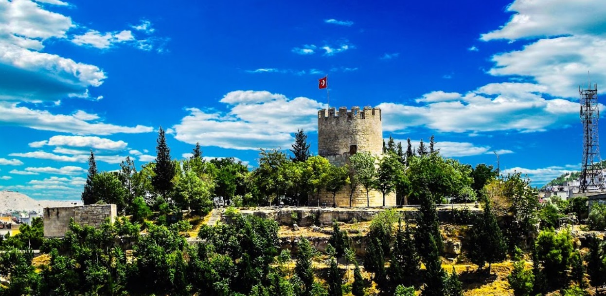
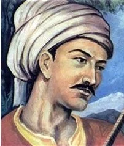
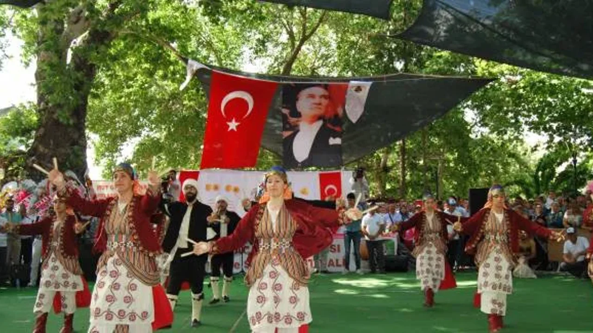

Alahan Manastırı
Erken Bizans dönemine ait önemli bir hac merkezidir. 4-6. yüzyıllar arasında inşa edilmiştir ve UNESCO geçici miras listesinde yer alır.
Tarihin ve kültürün izlerini keşfedin
Erken Bizans dönemine ait önemli bir hac merkezidir. 4-6. yüzyıllar arasında inşa edilmiştir ve UNESCO geçici miras listesinde yer alır.

Roma dönemine kadar uzanan geçmişe sahip olan kale, şehrin tarih boyunca stratejik önemini göstermektedir.

Ünlü halk ozanı Karacaoğlan'ın yaşadığı düşünülen bu bölgede halk edebiyatı ve türküler önemli bir yere sahiptir.

Her yıl düzenlenen festival, bölgenin tarım kültürünü ve sosyal yaşamını yansıtır.